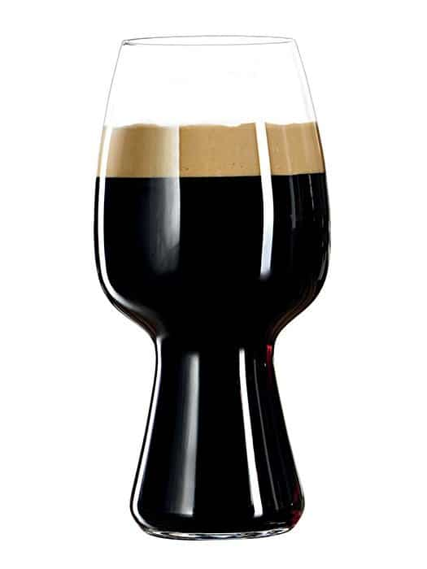

Chocolate Milk Stout

Description
The usage of lactose sugar in Stout beer has only been happening for the last century or so.
Originally the idea was it would offer better nutrition for the people drinking the Stout, this has been disproven but the creaminess and overall balance of Milk Stouts have kept them relavent since the Craft Beer revolution began in the 1970s.
Ingredients
Malt
8 lbs Maris Otter Malt
4 lbs Crystal 60 Malt
8 oz Chocolate Malt
4 oz Black Malt
Boil Additions
90 g East Kent Goldings
35 g Fuggles
1 kg Lactose sugar
Dry Hops
30 g East Kent Goldings
Yeast
11.5 g S-04 English Ale Dry Yeast
Directions
- Mash for 60 minutes at 154*F
- Sparge, ensuring run-off takes approximately 90 minutes netting a kettle volume of 7 gallons
- Boil vigoriously for 90 minutes, ensuring the boil hops and lactose sugar are added at the correct times
- Cool wort, knock out at 65*F to allow the yeast to begin fermentation by morning
- After 7 days add the dry hop additions
- Once fermentation is complete crash the beer down to 32*F
- After 1 week transfer beer to brite tank for further conditioning
- Once carbonated and conditioned for 2 weeks then package